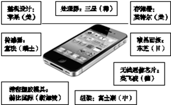

2015年北京市西城区中考历史试题 · 选择题 第21、22、23、24、25题
21．（2分）有人用“巨人林立”来概括当今世界局势，说美国是霸气仍存的巨人，日本是独脚的巨人，俄罗斯是大病初愈的巨人，欧洲是凝聚力正在加强的巨人，中国是迅速崛起的巨人。这是对世界哪一发展趋势的形象解读（ ）
A．世界经济全球化B．世界政治民主化
C．世界格局多极化D．世界文化多元化
22．（2分）所示图文反映了苹果手机的生产特点，这一特点体现出了（ ）

A．政治多极化B．经济全球化C．电子信息化D．文化多元化
23．（2分）科技进步影响着人们的生产生活方式。下列现象按其出现的先后顺序排列正确的是（ ）
①机器轰鸣，火车飞驰；②在线购物，网络订票；
③车马劳顿，家书万金；④楼上楼下，电灯电话。
A．①②③④B．②①③④C．①②④③D．③①④②
24．（2分）文学艺术是一定社会现实的反映，长篇小说《美国的悲剧》就反映了20世纪初美国的社会状况。他的作者是（ ）
A．德莱塞B．海明威C．马克•吐温D．斯托夫人
25．（2分）第三次科技革命的特点不包括（ ）
A．科学技术转化为生产力的速度加快
B．科学技术的各个领域之间互相渗透
C．新技术成为生产力中最活跃的因素
D．经济结构中重工业的比重越来越大